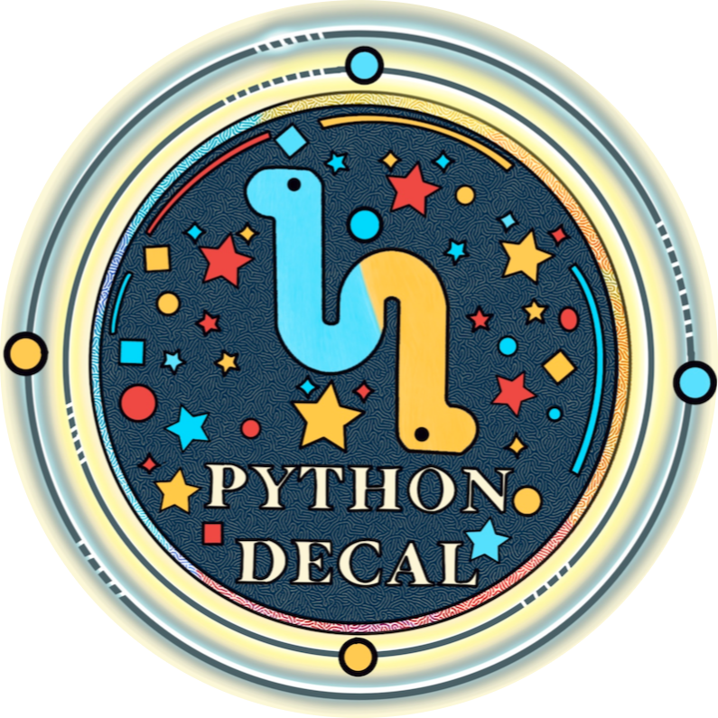
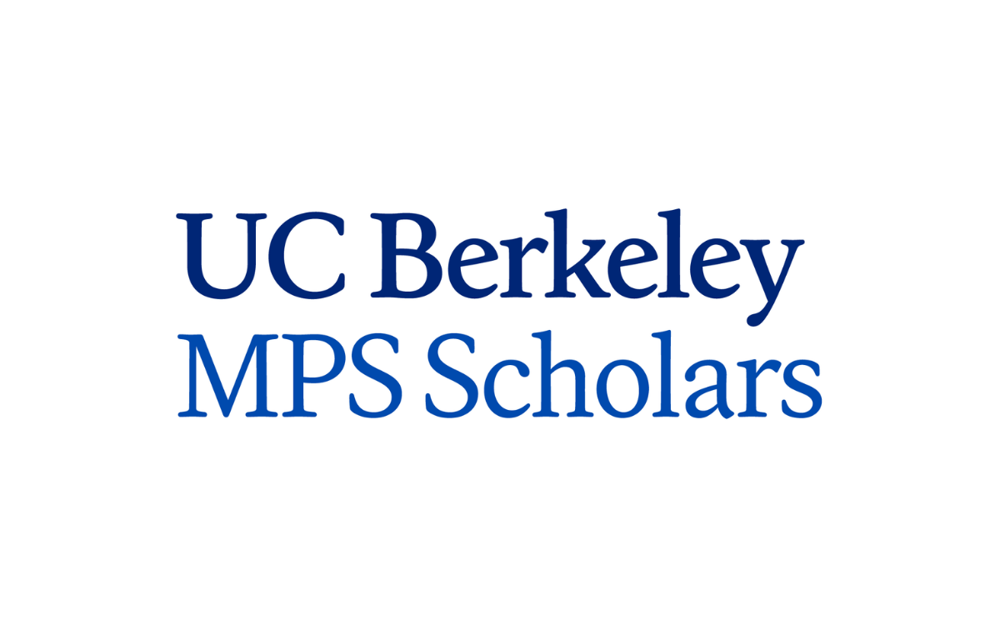

Teaching and Mentorship
Experiences that have allowed me to teach, mentor, and support other students in astronomy, coding, and STEM.

Python for Astronomers DeCal
Student Facilitator · UC Berkeley Department of Astronomy
As a student facilitator for Python for Astronomers, I help teach Python and computational problem solving to a class of roughly 70 students each semester.
I present course material during lecture, lead in-class discussion and problem-solving sessions, and co-host weekly office hours where students can get additional help and build confidence with Python.
Add more here about what you enjoy about teaching, what you have learned from working with students, or how this experience has shaped your approach to science communication.

Mathematical & Physical Science Scholars
Summer Undergraduate Mentor
As a Summer Undergraduate Mentor with Mathematical & Physical Science Scholars, I help guide incoming students as they begin their academic experience in STEM.
I work with two cohorts of approximately 10 students through one-on-one meetings, group meetings, workshops, and community building activities.
Add more here about your mentoring philosophy, the kinds of support you provide, or what you hope students take away from the program.